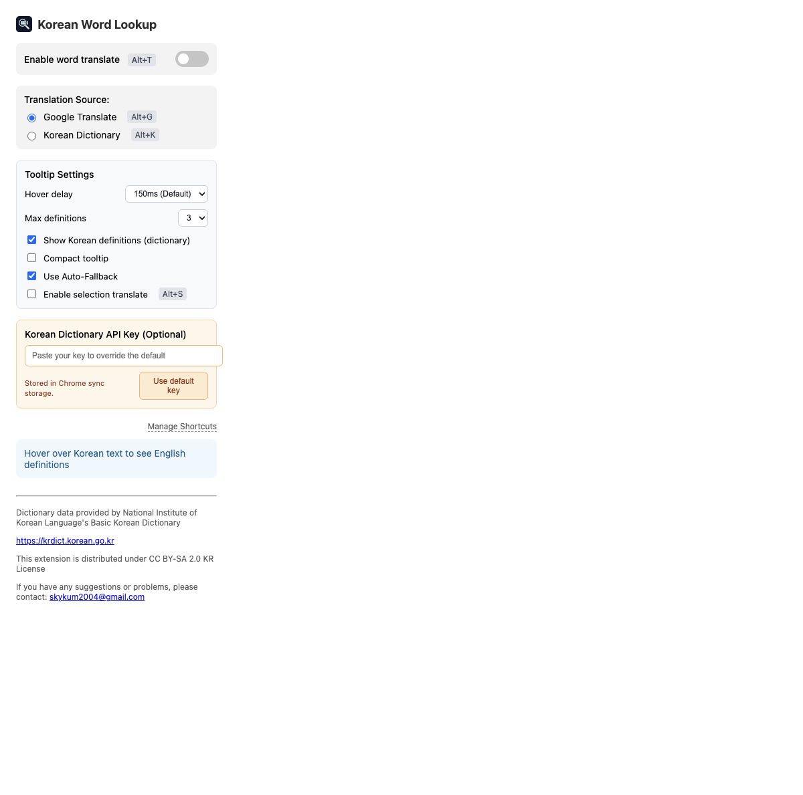

Keyboard-first workflow for daily Korean reading
⌘⇧T / Alt+T — Toggle translation
⌘⇧G / Alt+G — Google mode
⌘⇧K / Alt+K — Dictionary mode
⌘⇧S / Alt+S — Selection translate
Built for speed. Built for retention.
